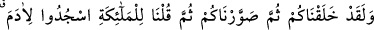
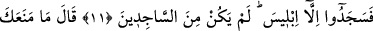
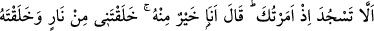
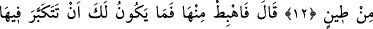
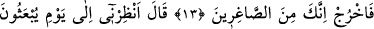
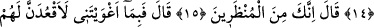
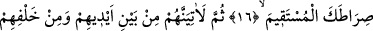
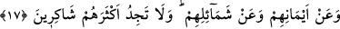
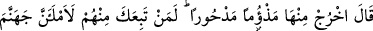
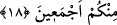

İBLİS’İN
HZ. ÂDEM’E
DÜŞMANLIĞI
11. Andolsun sizi yarattık, sonra size şekil verdik, sonra da meleklere, Âdem’e
secde edin! diye emrettik. İblis’in dışındakiler secde ettiler. O secde edenlerden
olmadı.
12. Allah buyurdu: Ben sana emretmişken seni secde etmekten alıkoyan nedir?
(İblis): Ben ondan daha üstünüm. Çünkü beni ateşten yarattın, onu çamurdan
yarattın, dedi.
13. Allah: Öyle ise, “İn oradan!” Orada büyüklük taslamak senin haddin değildir.
Çık! çünkü sen aşağılıklardansın! buyurdu.
14. İblis: Bana, (insanların) tekrar dirilecekleri güne kadar mühlet ver, dedi.
15. Allah: Haydi, sen mühlet verilenlerdensin, buyurdu.
16. İblis dedi ki: Öyle ise beni azdırmana karşılık, and içerim ki, ben de onları
saptırmak için senin doğru yolunun üstüne oturacağım.
17. “Sonra elbette onlara önlerinden, arkalarından, sağlarından, sollarından
sokulacağım ve sen, onların çoklarını şükredenlerden bulmayacaksın!” dedi.
18. Allah buyurdu: Haydi, yerilmiş ve kovulmuş olarak oradan çık! Andolsun ki,
onlardan kim sana uyarsa, sizin hepinizi cehenneme dolduracağım!